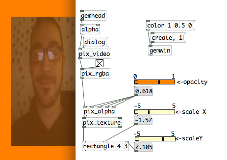
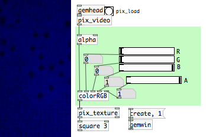
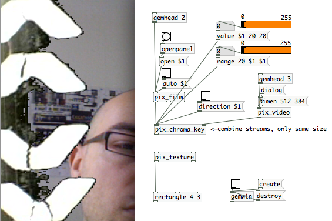
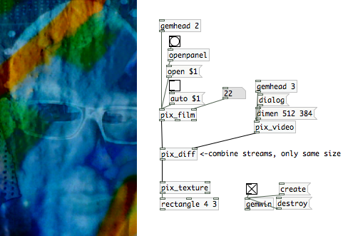
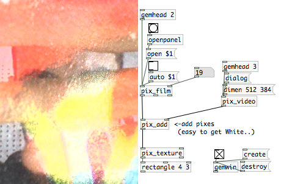

GEM mini-video mixer..
One of the first things you can do with GEM it´s a "video mixer". A video Mixer it used to be a "hardware" machine. basically, this machine combines the two inputs into a single output. Into a VJ setup, it used to be a very important piece, because that was the machine that allowed to mix in a creative way video content from vhs´s dvd´s video cams, ipods, laptops w video output or any other device with a compatible output..
Modern video mixers have more inputs, more outputs, different mixing modes and effects.
In pd it´s very practical to "emulate" that classic setup, one of the first benefits it´s that you can get rid of all that expensive hardware and do exactly the same function for a quarter of the price of a deccent video mixer.. (not counting the VHS´s, dvd players, video monitors and so..)
These are the basic elements you need to make the simplest two channel video mixer in gem:
Here we have two video players [pix_film], one video mixer [pix_mix] and the "output" [rectangle]
IMPORTANT: Pix_mix just works with same size images or movies.
Remember also that the slider that goes into the 3rd inlet of [pix_mix] has to be scaled between 0 and 1.

This is a good starting point to study the basic structure of a video mixer in gem but can be / should be modded when you want to make a serious use of it..
You can for example render each element of the composition in an diferent rectangle so you can modify rotation, position, size, etc in an independent way, instead of doing that with the final mix.
Also I recommend to make abstractions like "pd player" "pd chroma" "pd webcam".. So you will have a nice and clean modular interface.
1.5. Alpha, size..
To control the alpha and the independent size of a pix, we do the next:
NOTE: We need to transform the colorspace into rbga and enable the alpha blending. We can see which object do that function and where they should be placed.

1.6. Color.
With [colorRGB] we can colorize the video, images, etc.. there´s also an object called [color] but in that case, we don´t have an independent "inlet" for each color component. If you want to make changes in the opacity, you have to add the [alpha] object before the [colorRGB]. Default values are ( 0 0 0 1).

2- Adding webcam / live video input:
In Gem, you can use a classic usb webcam as video source and also any standard DV camera connected to the firewire port.
It´s also possible to connect several cameras into pd. In this case, check the help of [pix_video] and you will see how.
This is the structure of a minimalistic "video input" apparatus: (for more info cick help in pix_video..)
This is all we need to see the webcam in the GEM window in osX. for linux

To add pix_video to the gem string we make this:

Here I added the message [dimen 512 384( to [pix_video] to adjust the dimension of the two sources to mix. If the size of the two sources in pix_mix doesn´t fit, this will not work!! .
By default, pix_video outputs 320x240 that is a decent resolution for realtime live video mixing so if you want to work in any other resolution, keep this in mind.
3-chroma key
Let´s continue modding the "mini_mixer" ..

Here, instead of the [pix_mix] we have the object [pix_chroma_key]. this obect its useful to make compositions and making transparent some parts. The [direction( message defines which video inlet will be "processed".
Also in Gem we can use another standard blend modes like add, substract, multiply, difference... we can find the objects in /reference/Gem or we can call them directly: [pix_subtract] [pix_diff] [pix_multiply] [pix_add].. It´s recommended to take a quick look into the help of this objects before using it, otherwise, probably you will get only Absolutely white images or absolutely black....
In this example, we can see [pix_diff], this objects shows the difference between two pixes.

if we change "diff" for "multiply", this is what we get..

